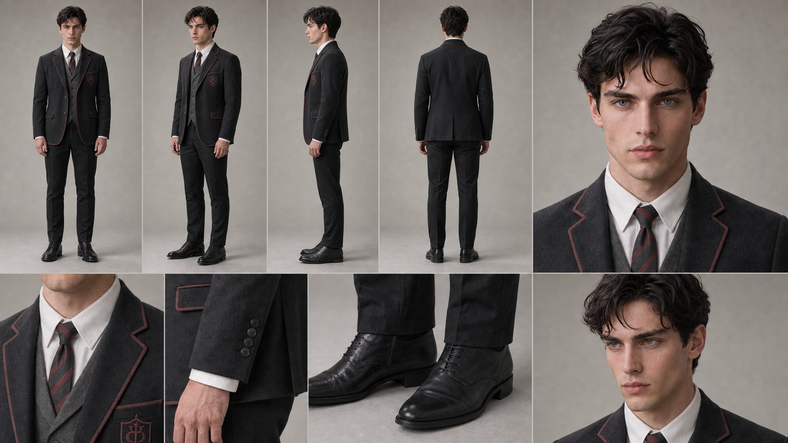

09 · Cassius hears it
Back to the workflowAll stills · 01 · 02 · 03 · 04 · 05 · 06 · 07 · 08 · 09 · 10 · 11 · 12

The five references used for this frame



Full prompt used for this frame
Create one clean photorealistic 16:9 cinematic classroom still. ORIGINAL INPUT ROLES: image 1 is the original empty room: precise salmon walls, sage trim, rear double door, leaded windows, TWO SEPARATE yellow front desks, coral chairs and clear central aisle. Image 2 is the established entrance wide shot: authoritative seating, relative positions and background cast/house uniforms; use for geometry and casting, NOT surface texture. Image 3 is original Vivienne identity/costume: exact adult angular face, green eyes, long auburn hair, charcoal/dusty red uniform. Image 4 is original Linney identity/costume: exact adult freckled face, blue eyes, tousled brown hair, plain light-grey uniform. Image 5 is original Cassius identity/costume: exact adult face, grey-green eyes, dark wavy hair, charcoal/dusty-red uniform. Preserve faces from sheets, never borrow background students' faces. LOCKED GEOGRAPHY: viewer-left front desk: Vivienne OUTER LEFT, inner aisle-side chair EMPTY. Viewer-right front desk: Linney OUTER RIGHT, inner aisle-side chair reserved for Cassius. Two distinct desks, clear aisle, no joined furniture. Rear pastel-uniformed adult classmates retain established cast and seating: blue man behind Vivienne's empty chair, lilac reader behind him, teal woman behind Vivienne; right-side students as in image 2. Background people remain present, softened but readable. Door frame stays centered at rear; right leaf open consistent with entrance. Maintain 180-degree screen direction and plausible depth. No additional lead duplicates. FINISH: smooth clean photographic gradients, soft daylight, fine natural face/hair detail, softly resolved wool. No coarse grain, noise, stippling, gritty sharpening, waxy skin, text, captions, collage or panels. Fresh reconstruction from these five references, not an edit of a prior generated close-up. One still instant, no multiple moments. SHOT-SPECIFIC FRAMING AND PERFORMANCE: CLOSE-UP of Cassius at the rear entrance, head and upper chest, camera inside classroom looking toward rear door. Precisely match image 5 face/hair. Sage/pink doorway behind, right leaf open; no invented doorway. He has just heard an unkind remark offscreen. His gaze shifts toward the source, his relaxed mouth settles into a firm line, brows very slightly draw together. Quiet disapproval and attention, not rage, violence, exaggerated scowl or smile. One readable still moment. No other characters in the crop. Maintain the same clean daylight and uniform as his entrance.
Generated from the original room and identity sheets, with the established entrance frame for seating continuity. Review draft.